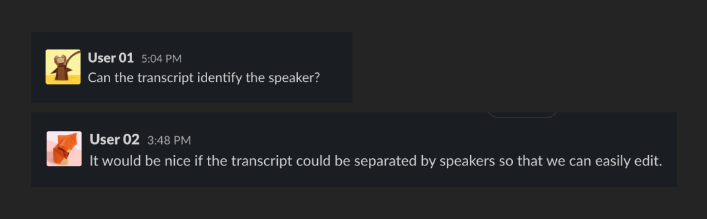
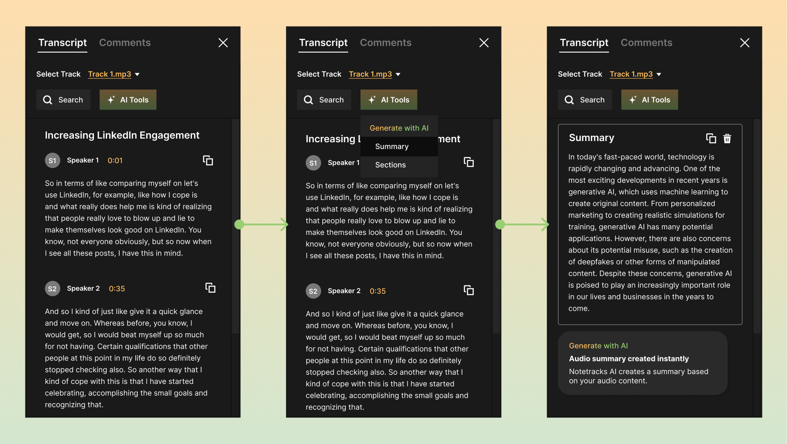

Overview
Introduction
Notetracks is a software tool that helps audio creators collaborate, review, and complete their audio projects. I work closely with the Founder to create and enhace product features.
The latest problem I have been tackling is transcription.
Problem Identification
Users of Notetracks requested to be able to separate speakers in the transcript.
Focus Areas
How might we improve the transcription experience and accomodate for different speakers.
Design Changes
Before
After
Content copy that better informs users about transcription status and action items.
Before
After
Working within the technical limits and providing users with the option to select the number of speakers.
Before
After
Replacing the transcription status with a button that gives users control over actions.
Before
After
Adding text to icons to enhance transparency and enabling individual editing or copying for each text section.
Design
Transcript Upload

Edit Speaker

Next Steps
Currently designing Generative AI features.
Please contact me for more information.
Reflection
📉 Bad Decisions
Working as a solo designer means you often make decisions quickly and independently. Sometimes that means making decisions you won’t agree with next week. I face these challenges by accepting change and being comfortable scrapping original ideas that were not scalable. It is okay to detach the component. Things are constantly evolving and previous design system might require constant updates here and there.
📢 Communicating Design Ideas
Convincing another person of a design idea without the support of stakeholders can be daunting. The past few months have been learning to communicate effectively and to stand my ground on my design decisions through extensive research on best practices. However, another challenge has been solving user problems directly (satisfying my PM) while creating scalable designs.